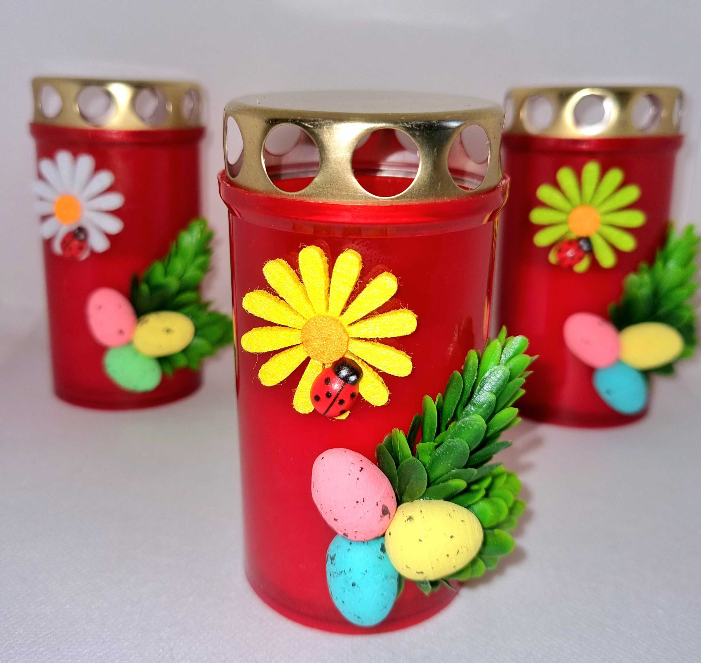
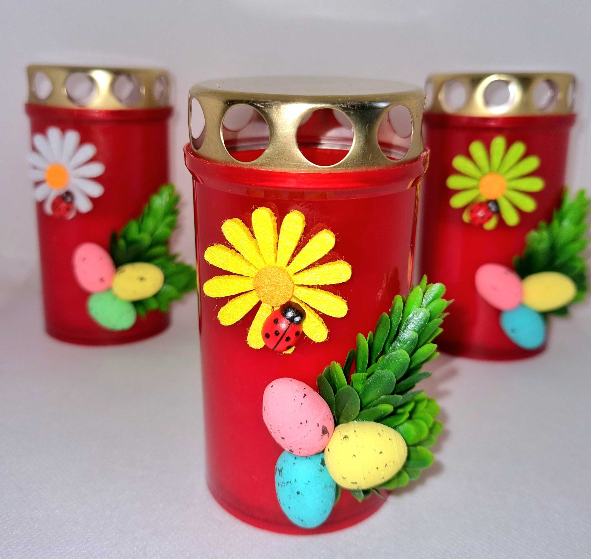

Tradiții de Paște în Moldova
Paștele este însoțit de multe obiceiuri și tradiții frumoase care se păstrează în satele și orașele din Moldova.
- Mersul la biserică în noaptea de Înviere
- Încondeierea ouălor
- Ciocnitul ouălor roșii cu urarea „Hristos a înviat!”
- Curățenia generală a casei înainte de sărbători
- Împărțirea bucatelor sfințite la biserică
 

← Înapoi la pagina principală